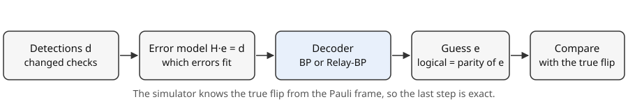

Part 3 · Decoding · Chapter 7 · 7 min read
What a decoder must do
The decoder sees only detections and must guess the errors. You will be able to read the detector error model, count its 37 columns for three rounds, and say what a log-likelihood ratio is for.
From detections to a guess
After a run the simulator holds one thing: the detections, the checks that changed between rounds (chapter 5). Call them , a string of bits with one entry per check per round. The real errors are hidden. A decoder is a program that reads and returns a guess of which errors happened, so that the simulator can undo them in software.

Many different error patterns give the same . Two flips can mimic one (chapter 3), and a measurement error in round 2 can mimic a data error that appears and disappears. A decoder cannot find the truth. It can pick the most likely pattern, given how likely each single error is.
The detector error model
To make that precise, list every single fault that can happen. In the model the decoders use, there are two kinds. A data error flips one of the 7 data qubits just before a round; with rounds there are such moments, because the final readout is also compared. A measurement error flips one of the 3 check results of one round. For three rounds that makes data errors and measurement errors: 37 columns.
The detector error model (DEM) is the matrix whose column records which detections fault lights. One detection is a row. A data error lights the rows given by the Steane check matrix , in its own round. A measurement error lights two rows, the same check in two consecutive rounds. Fed an error pattern (a 1 for every fault that happened), the matrix predicts the detections:
In words: add up, modulo 2, the columns of every fault that happened; the result is the detections you see.
Read the figure down a column. A square column has one to three marks, all inside its own round, copied from . A circle column has exactly two marks, three rows apart. All four data blocks have the same shape; the circles are what turns the picture from four separate blocks into one connected chain through time. Rows d1 to d3 are the checks of round 1 against the start, and d10 to d12 compare the final data readout with round 3.
Priors: how likely is each fault
Each column also carries a probability, the prior from chapter 6: for data columns and for measurement columns. For depolarizing noise at p = 0.03 these are and . Decoders do not use probabilities directly. They use a log-likelihood ratio (LLR), a number that says how much more likely “no fault” is than “fault”, on a logarithmic scale:
In words: a large ℓ means the fault is rare and costly to blame; ℓ falls to zero as p approaches one half.
At p = 0.03 depolarizing, a data column has and a measurement column . The code clips p to between and so that stays positive and finite. Multiplying probabilities over independent faults is adding LLRs, so the most likely pattern with detections is the one that solves equation 7.1 with the smallest total . That is the decoder’s task, and chapters 8 and 9 are two ways of attempting it.
Why it matters here
One more row sits next to the matrix in the code: the logical row, a 1 for every data column. It does not affect decoding. It tells the simulator whether the guess and the truth differ by a logical error, chapter 10.
Try it in the simulator
Run depolarizing noise at p = 0.03 in the Detections view. Find a shot with a single lit detection that stays lit in Raw view (a data error) and one with two lit detections in consecutive rounds (a measurement error). The pink rings show where the decoder points: a triangle vertex for the first, a grid cell for the second.
Open the simulator with this setupCheck yourself
How many columns does the matrix have for 5 rounds?
Data errors: 7 × 6 = 42. Measurement errors: 3 × 5 = 15. In total 57, with 3 × 6 = 18 rows.
Why does a measurement error light two detections?
A detection compares a check with the previous round. A wrong result differs from the round before and from the round after, so both comparisons change.
Why does the decoder minimise a sum of ℓ values?
Independent faults multiply probabilities, and the logarithm turns a product into a sum, so the likeliest explanation has the smallest total ℓ.
Sources
- E. Dennis, A. Kitaev, A. Landahl, J. Preskill (2002). Topological quantum memory. Journal of Mathematical Physics 43, 4452. doi.org/10.1063/1.1499754
Supports: decoding repeated rounds as one space-time problem. - Stim documentation. Detector error model file format. github.com/quantumlib/Stim/blob/main/doc/file_format_dem_detector_error_model.md
Supports: the detector error model as a list of independent error mechanisms. - D. J. C. MacKay (2003). Information Theory, Inference, and Learning Algorithms. Cambridge University Press; free to read online. www.inference.org.uk/itila/
Supports: belief propagation and log-likelihood ratios in decoding. - J. Chen, M. P. C. Fossorier (2002). Near optimum universal belief propagation based decoding of low-density parity check codes. IEEE Transactions on Communications 50, 406–414. doi.org/10.1109/26.990903
Supports: belief-propagation decoding of LDPC codes with min-sum messages.